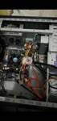
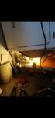

Welcome visitors, on this page you can find out more about me and my career plan on my mind.
While I am keep studying and improving myself during my "unemployed time", I am also looking for a stable job that I like. I have gained different sets of skills from my previous employment, including excellent verbal and written communication, exceptional customer services, and management skills. I am a hard-working and fast learning person.
My dream job, so far, is IS Business Analyst-Assistant since I do possess a BA degree in Economics and I am very interested in I.T.; however, I am open to other great opportunities as well. You can also review my resume here. If you find great job opportunities that suit me, feel free to contact me :)
And lastly, I want to share with you some of my "projects" and "artwork" that I am working on:
Fixing my friend's computer and a dryer machine:
 Utilizing Krita software to produce my images: